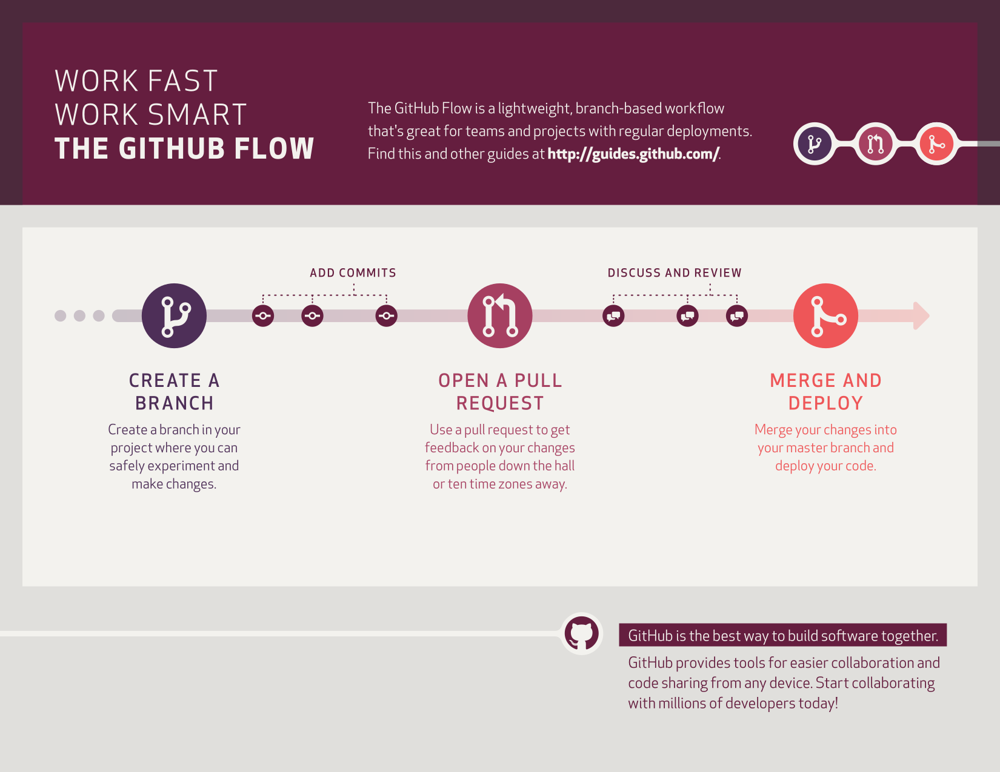

An introduction to version control with Git
(Press ? for the slides keyboard shortcuts)
https://unipvphysicslectures.github.io/GitTutorialSlides/Software version control
What is version control?
“Version control is a system that records changes to a file or set of files over time so that you can recall specific versions later.”
“Git is a version-control system for tracking changes in computer files and coordinating work on those files among multiple people. ”
A first typical scenario
You write a software that actually works...
...you modify it to add new features...
...it does not work anymore...
... and you don't know how to get back to the original version.
A second typical scenario
You write a software together with your colleagues and...
You cannot keep track of all the changes.
Who modified the software?
Where are the changes?
And above all, why did they do it?
Setting up github
Let's get to work
- Create and account on github.
- Don't worry about github now. We'll explain later.
- Do not forget username and password.
- We also need to create an authentication token .
Create a personal token to be used as a password between git and github
Setting up git
Initializing git
$ git config --global user.name "YOUR_USERNAME" # the github one
$ git config --global user.email "john.doe@unipv.it"
$ git config --global --list # to check that we did it right

Our Folder Structure at the beginning
GitLecture/
├── ContribRepos
└── MyRepos
Create this folder structure in your home folder, and then go back to it
Our Folder Structure at the end
GitLecture/
├── ContribRepos
│ ├── GitTutorial
│ └── PythonicCrystal
└── MyRepos
└── GitTutorial
This will be the folder structure after we create and contribute to all the relevant git repositories during the lecture
Working locally with git
Initializing our first repository
$ cd GitLecture # go to lecture root folder
$ mkdir GitTutorial # create folder
$ cd GitTutorial # move into folder
$ git init # initialize repository
$ ls -a # check if .git hidden folder has been created
Stage and commit your first file
Let's create a simple 3D plot
$ gedit Plot3D.py # from inside the GitTutorial folder
Copy-Paste the code below in Plot3D.py
# import plot libraries libraries
from mpl_toolkits.mplot3d import Axes3D
import matplotlib.pyplot as plt
# import numpy linear algebra library
import numpy as np
# create figure and set it to 3d projection
fig = plt.figure()
ax = fig.gca(projection='3d')
# 1D arrays for x and y coordinates
n_points = 200
x_min,x_max = -5,5
y_min,y_max = -5,5
X = np.linspace(x_min,x_max, n_points)
Y = np.linspace(y_min,y_max, n_points)
# 2D X,Y grids from 1D arrays
X, Y = np.meshgrid(X, Y)
# Z 2D grid for the plot
R = np.sqrt(X**2 + Y**2)
Z = np.sin(R)
# plot the surface.
surf = ax.plot_surface(X, Y, Z, cmap='magma',linewidth=0, antialiased=True)
# Customize the z axis.
ax.set_zlim(-1.01, 1.01)
# Add a color bar
fig.colorbar(surf, shrink=0.5, aspect=5)
# plot
plt.show()
Close the file and run the code
$ python Plot3D.py
Stage, Status, Commit and Log
$ git add Plot3D.py # add the file to the staging area
$ git status # check the repository status
$ git commit -m "this is my first commit" # always include a meaningful commit message
$ git log # see the commit history
Let's modify the code
and stage and commit again
n_points = 500
Z = np.sin(R)
surf = ax.plot_surface(X, Y, Z, cmap='viridis',linewidth=0, antialiased=True)
Seeing the modifications
git diff
Creating a new branch
A branch is a new ramification of your code, where you might try out new features, without affecting your original code.
$ git branch develop # create a new branch whose name is develop
$ git checkout develop # move to the new branch
$ gedit Plot2D.py # create a new file inside the new branch
Copy-Paste the code below in Plot2D.py
# import plot libraries
import matplotlib.pyplot as plt
# import numpy linear algebra library
import numpy as np
# create figure
fig,ax = plt.subplots()
# 1D arrays for x and y coordinates
n_points = 500
x_min,x_max = -5,5
y_min,y_max = -5,5
X = np.linspace(x_min,x_max, n_points)
Y = np.linspace(y_min,y_max, n_points)
# 2D X,Y grids from 1D arrays
X, Y = np.meshgrid(X, Y)
# Z 2D grid for the plot
R = np.sqrt(X**2 + Y**2)
Z = np.cos(0.75*R)
# plot the surface.
surf = ax.imshow(Z, cmap='magma',origin='lower')
# Add a color bar
fig.colorbar(surf)
# plot
plt.show()
Close the file and run the code
$ python Plot2D.py
Stage and commit changes in develop branch
$ git add Plot2D.py # stage the changes
$ git commit -m "my first commit on develop branch" # commit the changes
Check the status of your repository when you move back and forth from master branch to develop branch
Git Merge
Merging changes between branches ➔ Let's merge develop into master
$ git checkout master # move to the RECEIVING branch
$ git merge develop # merge develop into master
$ git log # let's see what happened
git and remote repos
Working with git and github
Working with remote repositories
First we create a new repository on github
Add the remote repo and push the code to github
$ git checkout master # go to master branch
$ git remote add origin https://github.com/YourUsername/GitTutorial.git # add your remote repo
$ git branch -M main # change master branch name to main (new github standard)
$ git push -u origin main # push your local repo (main) to the remote one (origin)
You should see this if the push was successful
Collaborating on a shared remote github repo
Collaborating using the github flow
Add a collaborator to your repository
Accept the collaboration invite (check the email)
Back on your computer
Clone, feature branch and modify
$ cd ~/GitLecture/ContribRepos # go to the ContribRepos folder
$ git clone "repo URL" # clone the repo that was shared with you
$ cd "repo Folder" # go to repo folder (it should be GitTutorial)
$ git branch plot1d # create a new branch with an appropriate name
$ git switch plot1d # switch to the new branch

Add an example
$ gedit Plot1D.py # modify the branch by adding an example
Copy-Paste the code below in Plot1D.py
import numpy as np
import matplotlib.pyplot as plt
# Fixing random state for reproducibility
np.random.seed(19680801)
dt = 0.01
t = np.arange(0, 30, dt)
nse1 = np.random.randn(len(t)) # white noise 1
nse2 = np.random.randn(len(t)) # white noise 2
# Two signals with a coherent part at 10Hz and a random part
s1 = np.sin(2 * np.pi * 10 * t) + nse1
s2 = np.sin(2 * np.pi * 10 * t) + nse2
fig, axs = plt.subplots(2, 1)
axs[0].plot(t, s1, t, s2)
axs[0].set_xlim(0, 2)
axs[0].set_xlabel('time')
axs[0].set_ylabel('s1 and s2')
axs[0].grid(True)
cxy, f = axs[1].cohere(s1, s2, 256, 1. / dt)
axs[1].set_ylabel('coherence')
fig.tight_layout()
plt.show()
Stage, commit and push to origin
$ git add Plot1D.py # stage changes
$ git commit -m "adding Plot1D.py to branch plot1d" # commit changes to plot1d branch
$ git push origin plot1d # push plot1d branch to origin (i.e. to github)

Create a pull request on github as the invited user
Accept pull request (as owner or as collaborator)
Collaborating on large github projects
Collaborating using the forking flow
When you want to contribute to a large project, or simply you do not have direct access to the repository
First of all, let's fork the target repository
Clone and add feature branch
$ cd ~/GitLecture/ContribRepos # go to the ContribRepos folder
$ git clone https://github.com/YourUsername/PythonicCrystal.git # clone your FORKED REPO
$ cd PythonicCrystal # go to the FORKED REPO folder
$ git branch fork_contrib # create a new branch with an appropriate name
$ git switch fork_contrib # switch to the new branch

Add an example, stage, commit and push to origin
Choose a filename such as script_FamilyName.py
$ git add script_FamilyName.py # stage changes
$ git commit -m "adding script_FamilyName.py to branch fork_contrib" # commit changes to fork_contrib branch
$ git push origin fork_contrib # push fork_contrib branch to FORKED REPO

Perform the pull request from the forked repository to the original one
Pull request from forked repositories are accepted in the main repo
tips and tricks
use a .gitignore file
# Notebook checkpoints
.ipynb_checkpoints/
# Byte-compiled / optimized / DLL files
__pycache__/
*.py[cod]
# C extensions
*.so
# Distribution / packaging
bin/
build/
develop-eggs/
dist/
eggs/
lib/
lib64/
parts/
sdist/
var/
*.egg-info/
.installed.cfg
*.egg
# Installer logs
pip-log.txt
pip-delete-this-directory.txt
# Unit test / coverage reports
.tox/
.coverage
.cache
nosetests.xml
coverage.xml
# Translations
*.mo
# Mr Developer
.mr.developer.cfg
.project
.pydevproject
# Rope
.ropeproject
# Django stuff:
*.log
*.pot
Going back in time: 1
jump to an old commit
$ git checkout "old commit hash" # you find the commit hash with "git log"
Going back in time: 2
Reset the repo to an old commit (and delete all the new commits up to a point)
$ git reset --hard "old commit hash" # you find the commit hash with "git log"
Add an upstream to a forked repo
$ git remote add upstream https://github.com/GitForPhysicsUnipvPhDs/PythonicCrystal.git # original repo as UPSTREAM
$ git pull upstream
$ git fetch upstream && git merge upstream

Some editors make life simpler
These slides are a git repo
$ git clone https://github.com/UnipvPhysicsLectures/GitTutorialSlides.git # clone the repository
$ cd GitSlides # move to repository folder
$ python -m http.server 8000 # start a web server
Go to http://0.0.0.0:8000/ in a browser